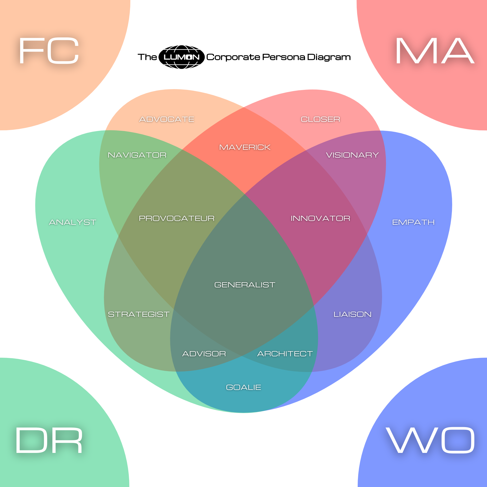

Corporate Personas
<-- Back to A Severed Story Table of Contents
Well done so far on your readings! This next section, Corporate Personas, is chock-full of interesting context that will shape your experience on our severed floor. After you finish reading everything below, one of our HRPE's will reach out to book a time slot with you. After a careful assessment is conducted, you will be assigned a Corporate Persona.
Rejoice!

A Corporate Persona is derived from an employees specific ratio of The Four Tempers: Frolic (FC), Malice (MA), Woe (WO) and Dread (DR). In the Lumon Corporate Persona Diagram, you can see exactly how these combinations overlap, creating fifteen unique persona's.
Let's explore them now!
Single Temper Persona's
The Advocate (FC)

The Advocate is the epitome of FROLIC, for better or worse. They are devoid of caution, empathy, or strategy.
The Advocate is a mindless cheerleader without the proper taming.
Employee Profile Adjustments
Add 6 Temper Points in the FROLIC row.
All FROLIC-based Core Principles are Core Competencies (may roll them with Confidence)
Special Attributes
Uplifting Remark
Cost: Gain 1 Stress
The Advocate may pass on their chipper demeanor to another in the right moment.
Make an Uplifting Remark to give a peer Confidence on any one Core Principle roll, or DOUBLE CONFIDENCE (roll 4 d20's, take the highest) on any one FROLIC-based Core Principle Roll.
The Closer (MA)

The Closer is the personification of MALICE, harnessing force of will to win! Consequences be damned.
The Closer is a bull in a china shop without the proper taming.
Employee Profile Adjustments
Add 6 Temper Points in the MALICE row.
All MALICE-based Core Principles are Core Competencies (may roll them with Confidence)
Special Attributes
Use It!
Cost: Gain 3 Stress
The Closer sometimes does their best work under high-pressure scenarios. As such, they can choose to Use It! - and by that, we mean channel stress into success.
When this attribute is used, the Closer either:
Turns a failed Core Principle Roll into an automatic success, if the Core Principle is MALICE-based.
If the Core Principle Roll is not MALICE-based, the Closer instead gets to reroll with Confidence and take the new roll.
For the Closer, taking "no" for an answer is an unlikely approach.
Additional Caveats:
Upon the success of a course of action where the Closer used this Special Attribute, a negative consequence of the GM's choosing will occur. The degree of consequential severity is determined by the GM, and is based upon the GM's' perception of the difficulty of what transpired.
Inappropriate Outburst
Cost: Free
Requirements: Stress levels must be either in Poor or Terrible range.
The Closer sometimes does their worst work under high-pressure scenarios. To that end, they may have what is colloquially known as an Inappropriate Outburst.
To receive the stress-recovering benefits of an Inappropriate Outburst, the qualities of the outburst must include:
Vulgarities.
Something must break.
Doing so will result in stress points being halved (rounded down). Unfortunately, this does not include stress caused by Problems or Serious Problems.
We advise to have an Inappropriate Outburst with caution, as there is always the chance that behavior of this nature could result in additional Problems, Serious Problems, or even trips to The Break Room. Or perhaps just a Wellness Session, should luck be on your side.
One more thing: should a Closer be on the team - all coworkers of the Closer are eligible to have their own Inappropriate Outbursts. Our research indicates this phenomena is a result of proximity-related stressors.
The Empath (WO)

The Empath is the matron of WOE, deeply attuned to their own troubles and keenly aware of the troubles brewing in their neighbors.
The Empath is a wet rag without the proper guidance.
Employee Profile Adjustments
Add 6 Temper Points in the WOE row.
All WOE-based Core Principles are Core Competencies (may roll them with Confidence)
Special Attributes
Share The Load
Cost: Free
The Empath, in their constant subconscious pursuit of misery, may take on the burdens of others.
Whether they become the shoulder to cry on, the encouraging word in the right moment, or the martyr for someone else's failures, once per workday the Empath may take on any number of stress points from someone else, making that stress their own.
This Special Attribute can also even temporarily relieve the stress caused by Problems and Serious Problems - but only for that workday.
The Analyst (DR)

The Analyst is the juggernaut of DREAD, powered by fear to assess the likelihood of avoiding failure in every moment.
The Analyst is a deer caught in the headlights without the proper guidance.
Employee Profile Adjustments
Add 6 Temper Points in the DREAD row.
All DREAD-based Core Principles are Core Competencies (may roll them with Confidence)
Special Attributes
Worst Case Scenario
Cost: Gain 5 Stress
Constantly focused on avoiding terrible situations, the Analyst sometimes loses themselves in daydream. At a cost of gaining five stress, it turns out the last terrible decision the team made was actually just one of those daydreams.
Worst Case Scenario can be used to narratively turn back the clock on up to 1 hour of in-game time.
It was just the Analyst playing out a Worst Case Scenario in their mind.
Prudence
Cost: Free
Knowing in their hearts the price of a misstep, the Analyst has an ability like no other to clearly perceive the folly rising around them. Should they keep their team in line and quell said folly, their efforts are rewarded by a natural boon to team alignment.
Starting at a bonus of zero points, for each workday that a team with an Analyst on board keeps themselves out of trouble from the perspective of their superiors, all team members will receive one temporary bonus point they may add to all rolls. For each day this trend of compliance continues, another bonus point is added.
Should the trend break and a breach of conduct occur, those bonus points are reset back to zero.
Dual Temper Persona's
The Navigator (DR+FC)

The Navigator's sensitivity to DREAD and FROLIC gives them the ability to steer their way through crisis, cautiously yet nimbly.
Employee Profile Adjustments
Add 3 Temper Points in the FROLIC and DREAD rows.
Select 2 Core Principles to become Core Competencies - 1 in the FROLIC row and 1 in the DREAD row.
Special Attributes
Quick Pivot
Cost: Gain 1 Stress
The Navigator is adept at implementing last minute changes to a plan.
Whenever a course of action has failed, the Navigator may make a Quick Pivot to try something new in the moment, potentially avoiding any consequences related to the previously failed action. Perhaps it's just stepping into a conversation that's obviously turning sour, or perhaps it's attempting to somehow hot-wire your boss's desktop computer at the last moment, when the password you thought was supposed to be theirs didn't work.
Regardless of what Core Principle is embodied in the new course of action, the roll will be made with Confidence.
If this new course of action also fails, the penalty is another point of stress gained. Conversely, if the new course of action succeeds, one point of stress is recovered.
Lastly, if the Core Principle embodied in that new roll is also a Core Competency, roll with DOUBLE CONFIDENCE! (roll 4 d20's, take the highest).
The Maverick (FC+MA)

The Maverick merges the free spirit of FROLIC with the intensity of MALICE - creating a persona that embraces chaos like an old friend.
Employee Profile Adjustments
Add 3 Temper Points in the FROLIC and MALICE rows.
Select 2 Core Principles to become Core Competencies - 1 in the FROLIC row and 1 in the MALICE row.
Special Attributes
Weird Mood
Cost: Free
At the beginning of each workday, The Maverick rolls a d20. On a 15 or higher, The Maverick is in a Weird Mood that day.
While in a Weird Mood, anything that would normally cause stress to be gained instead causes that much stress to be recovered.
This additionally means that if there is any cost associated with using a Special Attribute, that cost is flipped. If the cost of something is gaining two stress, the cost instead becomes recovering two stress. Keep in mind that stress must be present and available for recovery, in order to pay that flipped cost.
Also, they are in a weird mood.
Unorthodox Methods
Cost: Gain 2 Stress
In line with their supposed "wild card" nature, the Maverick may use Unorthodox Methods to either win big, or lose big.
To receive the benefits of Unorthodox Methods, the course of action must cause someone to question your sanity (the GM will make the final ruling on this).
When Unorthodox Methods are used, the Maverick will make the associated Core Principle Roll (still applying all bonuses). On a ten or lower, not only does the course of action automatically fail, but all those who witness the event gain three points of stress.
On an eleven or higher, the course of action automatically succeeds, and all those who witness the event recover three points of stress.
The Visionary (WO+MA)

Able to clearly see the path towards a better future for themselves and their team, the Visionary will stop at nothing to make that vision a reality.
Employee Profile Adjustments
Add 3 Temper Points in the WOE and MALICE rows.
Select 2 Core Principles to become Core Competencies - 1 in the WOE row and 1 in the MALICE row.
Special Attributes
Vision Board
Cost: Gain 6 Stress (can be split up over time)
The Visionary knows the value of visualizing ones future. As such, they may begin the process at any time of creating a Vision Board for their team, so that all may benefit.
Finding a cork board might take a while and require some exploring into nearby offices.
To be clear, a Vision Board is a physical tool where employees may add pictures, drawings, messages, etc. onto the board as reminders of where they have been, and where they want to go.
Once the Vision Board is set up, it functions as follows:
Whenever an employee succeeds in a course of action, they can choose to later memorialize that event. It could be remembered by reenacting the event in a drawing, or writing a short journal entry or haiku about how it made them feel, etc. Make sure to also notate which Core Principle was involved in the course of action taken.
With a physical representation of the memory in hand, it may then be added to the Vision Board.
Then, once per day, an employee may choose to take inspiration from one momento they've added to the Vision Board. For the rest of that workday, the Core Principle originally involved with that momento will count as a Core Competency.
As time progresses, players may continue adding momento's to the team Vision Board, slowly building up access to different Core Principles they can then be inspired by.
Burning Clarity
Cost: Recover 3 Stress
Requirements: Stress levels must be in Terrible range.
Sometimes for the Visionary, there are moments of high stress and despair where Burning Clarity finds a way through the noise.
Once per workday, whenever the Visionary is at a stress level in the Terrible range, Burning Clarity grants them the right to ask the GM a question, and get a "yes" or "no" answer.
Additional Caveats:
If the question is about information that the Visionary does not actually have, the GM is welcome to not answer, or to provide an answer to something they did not ask (whether useful or otherwise). The recommendation for maximizing Burning Clarity is to ask for insight into information already known, but not yet fully understood.
The Visionary may get a little more than a "yes" or "no", if the GM is feeling especially generous that day.
The Liaison (WO+FC)

The Liaison - a pioneer of human connection. Balancing the emotional intelligence that comes from WOE and the cheerful fervor that flows from FROLIC, the Liaison is the person you want doing outreach for the team.
Is it the first time meeting a new department? We recommend you send the Liaison.
Employee Profile Adjustments
Add 3 Temper Points in the WOE and FROLIC rows.
Select 2 Core Principles to become Core Competencies - 1 in the WOE row and 1 in the FROLIC row.
Special Attributes
Good First Impression
Cost: Gain 2 Stress
The Liaison always knows how to make a Good First Impression. At a cost of gaining two stress, the Liaison gains Confidence on any Core Principle roll related to winning someone over for the first time, putting them at ease.
Should sufficient preparations be made for a Good First Impression ahead of time, the Liaison instead gains DOUBLE CONFIDENCE, and the stress-gaining cost associated with the attribute is reduced by one.
The required preparations include:
A food item to share.
A work of art, literature, or philosophy to share.
At a cost of gaining three stress instead of two, the Liaison's Good First Impression also works on groups of people / group introductions. And again, if sufficient preparations are made, the stress-gaining cost reduction of one stress point is still applied.
Kind Eyes
Cost: Gain 1 Stress
The Liaison knows how to make their eyes kind. As a result, whenever they attempt to use their Kind Eyes on another, if the other person is willing to receive those Kind Eyes, that person may recover one stress point, and gain Confidence on their next Core Principle roll.
The Liaison may also use Kind Eyes on themselves, should they be looking at themselves in a mirror.
Additional Caveats:
Kind Eyes may only be used three times per workday, as it begins to strain the Liaison's face muscles past that point.
The Goalie (WO+DR)

The Goalie is a team protector by nature, driven by a desire to spare others from the kind of darkness that has made them who they are.
Attuned to WOE, they have a deep connection to pain and loss. Attuned to DREAD, they know how to keep others away from it.
Employee Profile Adjustments
Add 3 Temper Points in the WOE and DREAD rows.
Select 2 Core Principles to become Core Competencies - 1 in the WOE row and 1 in the DREAD row.
Special Attributes
Go-Between
Cost: Free
Should the Goalie involve themselves in the endeavors of others, they may do so as a Go-Between. Once per workday, the Goalie may choose a team member to work so closely with that their efforts become seamlessly syncopated and aligned.
When Go-Between is engaged and the Goalie and coworker are in the presence of each other, the following occurs:
All stress gained by the Goalie's coworker is split between the two parties.
For example: if the coworker is reprimanded that day by the Severed Floor Manager and takes two points of stress - the Goalie takes one of those two points as long as they were present in the room. Or, if the coworker uses a Special Attribute that costs gaining stress, they split the stress cost.
If the amount of stress gained is an odd number, the higher amount goes to the Goalie.
All of the Core Competencies of The Goalie are now also temporarily Core Competencies for the coworker.
This effect lasts for the remainder of the workday, whenever the Goalie and their coworker remain in each other’s presence.
Steely Gaze
Cost: Gain 3 Stress
The darkness behind those kind eyes sometimes comes out in a Steely Gaze,
At a cost of 3 points of stress to the Goalie, they may choose to stare deep into someone's soul. This unnerving Steely Gaze causes the last course of action a target engaged in to be re-rolled, this time with Hesitance.
Note: The outcome of the course of action must not have yet been revealed in order to use Steely Gaze in this manner.
If instead the Goalie preemptively provides a target with a Steely Gaze before any course of action is taken, that target takes their next roll with DOUBLE HESITANCE.
The Strategist (MA+DR)

The Strategist is a heartless tactician motivated by two goals. First, their MALICE drives them to reach for success in all things. Second, their DREAD drives them to adamantly seek out self-preservation.
Should a Strategist's heart be stretched beyond its typical bounds, it is possible they may consider the well-being of others amidst their many plans.
Employee Profile Adjustments
Add 3 Temper Points in the MALICE and DREAD rows.
Select 2 Core Principles to become Core Competencies - 1 in the MALICE row and 1 in the DREAD row.
Special Attributes
Airtight Plan
Cost: Gain 5 Stress
Given enough mental effort, the Strategist may come up with an Airtight Plan. Using this Special Attribute grants all team members DOUBLE CONFIDENCE on any rolls associated with carrying out said plan.
Additional Caveats:
The Strategist must come up with an actual plan that they can clearly verbalize to their co-workers and the GM.
The Airtight Plan, once underway, must take less than 24 hours.
The Airtight Plan can be started anytime. However, if one work-week of time has passed and the plan hasn't yet begun, DOUBLE CONFIDENCE is reduced to Confidence.
If any team member chooses to improvise and deviate from the Airtight Plan, the Strategist can somehow feel it in their bones, and takes a point of stress for each course of action that the GM considers to be a deviation. Also, DOUBLE CONFIDENCE is not awarded to those deviating rolls.
If the Airtight Plan leads to an overwhelmingly positive outcome (as judged by the GM), the Strategist recovers 5 Stress. Otherwise, they recover 3 Stress. Either way, this stress recovery will only occur if no one deviated from the Airtight Plan while it was carried out.
Collateral Damage
Cost: Free
Whenever the Strategist wants to get something done, they can ensure success by throwing others under the bus.
Once per day, the Strategist may choose to succeed on any course of action that would require a Core Principle roll. The catch? All others who witness or hear about said event take three points of stress.
Additional Caveats:
When Collateral Damage is used, it must negatively impact someone else of the Strategist's choosing, friend or foe. A negative impact is defined for this purpose as an event which meaningfully harms:
Position
Reputation
Emotional state
Mental state
Physical state
The GM will decide if the action taken is negatively impactful enough to count as Collateral Damage. Should it not be, then Collateral Damage will not apply, and the Core Principle roll will be made normally.
Triple Temper Persona's
The Provocateur (MA+DR+FC)

The Provocateur is a risk taker and a pot stirrer. They dance on the edge of disaster, enjoying every moment.
Provocateurs can either destroy productivity with their toxic nature, or potentially drive competition to new heights, bolstering productivity instead.
It merely depends on the taming of their tempers.
Employee Profile Adjustments
Add 2 Temper Points in the MALICE, DREAD, and FROLIC rows.
Select 2 Core Principles to become Core Competencies from either MALICE, DREAD, or FROLIC rows.
Special Attributes
Gossip
Cost: Recover 2, 3, or 4 Stress
The Provocateur thrives on spreading rumors that ripple through the severed floor.
With Gossip, the Provocateur plants a small, medium, or large rumor that can impact perception and change the story - but with the risk of the rumor being exposed as a lie.
Small Rumor:
At a cost of recovering two stress, the Provocateur spreads minor misinformation that produces mild benefits (e.g., delays/diverts a Severed Floor Manager).
Medium Rumor:
At a cost of recovering three stress, the Provocateur spreads moderate claims that shift perceptions. (e.g., departments become suspicious of each other).
Large Rumor:
At a cost of recovering four stress, the Provocateur spreads bold, dramatic claims that could cause significant upheaval (e.g., a leader’s authority is questioned, causing unrest).
The Provocateur comes up with the contents of the rumor, and then the GM determines what size the rumor falls under. At that point, the Provocateur may decide if they wish to proceed.
Then, the Provocateur actually plants the rumor, making either a Wit or Wiles based Core Principle roll. If they roll well enough relative to the size of the rumor, it increases the chance of the rumor sticking.
How Gossip Sticks:
Gossip takes three days to fully spread and stick. The percent chance of the rumor being exposed as a lie decreases each day.
Small Rumor: Day 1: 30%, Day 2: 15%, Day 3: 5%.
Medium Rumor: Day 1: 50%, Day 2: 30%, Day 3: 15%.
Large Rumor: Day 1: 70%, Day 2: 50%, Day 3: 30%.
The GM will roll a d100 in secret at the start of the next three workdays. If they roll below that day's percent chance of exposure, then the rumor is exposed and the GM will decide on the repercussions.
If the rumor is not exposed for all 3 days, then The Provocateur has gotten away with it, and the impacts of the successful Gossip will begin to play out at the GM's discretion.
If the Provocateur succeeded on their initial roll to plant the rumor, all daily percentages go down by 10% (making Small Rumor's only take 2 days to stick).
Goad
Cost: Gain 3 Stress
The Provocateur knows how to push buttons - egging people on and getting them to do what they want.
When Goad is used, the Provocateur and their target make contested Core Principle Rolls. The Core Principle in play for the Provocateur's roll is dependent on how they act it out. The target must respond with a Wit Core Principle Roll.
If the Provocateur wins, they have successfully goaded the target into taking on a course of action within the next one hour.
Additional Caveats:
The GM will award the target of the Goad a number of bonus points to add to their roll outcome, based on how difficult they deem the Goad attempt should be.
The same target cannot be goaded more than once in a single workday.
Please be sure to tame yourself, Provocateur. Constant goading can upset your co-workers.
The Innovator (MA+WO+FC)

The Innovator is somewhat of a "Mad Scientist" persona.
Fueled by their MALICE-driven ambition, tempered by the emotional resonance of WOE and the playful energy of FROLIC, the Innovator works with purpose and flair.
Employee Profile Adjustments
Add 2 Temper Points in the MALICE, WOE, and FROLIC rows.
Select 2 Core Principles to become Core Competencies from either MALICE, WOE, or FROLIC rows.
Special Attributes
Different Angle
Cost: Free
Once per day, the Innovator may take someone aside to have a chat, helping them see something from a Different Angle.
The result: On two separate occasions of the target's choosing for the remainder of the day, any Special Attribute cost that would require that target to gain stress, instead now requires them to recover stress, and visa versa.
The Innovator may also choose to use this Special Attribute on themselves.
Think Outside the Box
Cost: Gain 6 Stress
With enough mental gymnastics, The Innovator sees ways to solve Problems that no one else can.
At a cost of six stress, the Innovator may Think Outside the Box. Through this, they realize the solution to a Problem and grant DOUBLE CONFIDENCE to themselves or a team member for any rolls associated with resolving that Problem or Serious Problem.
Additional Caveats:
Until the Problem or Serious Problem that Think Outside the Box was used on is resolved, the Innovator becomes fixated on it, and will refuse to Think Outside the Box or see things from a Different Angle.
If for some reason the Problem is later still deemed by the Innovator as unsolvable, they can give up on it and the DOUBLE CONFIDENCE bonus is revoked. By letting go of their fixation, they recover the mental capacity to once again use their Special Attributes.
The Architect (DR+WO+FC)

The Architect is a thoughtful planner by nature, as a result of their affinity towards DREAD. Their plans and stratagems are not solely put forth in the service of "winning", however (like the Strategist, for instance).
Instead, the Architect plans for a better journey. In their eyes, life is about the process of building something, not about what happens after.
To that end, the Architect prioritizes the emotional consequences of their work (WOE), and the creative process (FROLIC) in everything they plan or build, so as to cultivate what they see as the best path forward.
A resilient persona, perhaps. But not a born winner.
Employee Profile Adjustments
Add 2 Temper Points in the DREAD, WOE, and FROLIC rows.
Select 2 Core Principles to become Core Competencies from either DREAD, WOE, or FROLIC rows.
Special Attributes
Motivational Quote
Cost: Gain 1 Stress
The Architect knows the power of a positive word, strategically placed in a person's heart at the right moment.
Once per day, the Architect may share a Motivational Quote from The Compliance Handbook with their fellow coworkers. In doing so, all coworkers may also once on that same day, recall the quote in association with a Core Principle roll. Should they do so, they may add a bonus of 5 points to their roll.
Additional Caveats:
The Architect must share an actual quote from The Compliance Handbook. Please see the Suggested Motivational Quotes section for help in this matter.
The Architect must most certainly not share any motivational quotes from any other source materials.
Absolutely not.
Who knows what might occur.
Ray of Sunshine
Cost: Free
Requirements: Stress levels must be in Outstanding range.
When at their best, the Architect's daily efforts towards team cohesion produces the ideal work environment. Like a Ray of Sunshine, they lift the weight of a stressful day off of their co-worker's shoulders.
Mechanically speaking - for as long as the Architect's stress levels are in the Outstanding range, all team members may recover two points of stress at the beginning of each workday, instead of just the standard one.
The Advisor (MA+DR+WO)

The Advisor is a conundrum. They assess and respond to risk (DREAD) in a way that is both sharp (MALICE) yet empathetic (WOE) - more layers of consideration than most choose to weigh at any given time. As a result, the Advisor excels in the art of subtle influence.
The Advisor blends emotional intelligence with a calculating edge, influencing outcomes without overtly taking charge.
Employee Profile Adjustments
Add 2 Temper Points in the MALICE, DREAD, and WOE rows.
Select 2 Core Principles to become Core Competencies from either MALICE, DREAD, or WOE rows.
Special Attributes
Whispered Council
Cost: Gain 2 Stress
Crafting and planting a seed of doubt in another, the Advisor knows how to subtly influence the choices others make.
As a cost of gaining 2 stress, the Advisor may take someone aside for Whispered Council, explaining to that coworker why something they might be planning to do is a bad idea, and why something the advisor suggests is a better idea.
When this special attribute is used, the target coworker is still ultimately able to make their own decision. However, they now roll with Hesitance on the course of action they were originally intending. For the course of action that the Advisor alternatively suggests, if the target decides to do that instead, they'll roll that with Confidence.
Additional Caveats:
When Whispered Council is used, the Advisor must physically take the target coworker aside, and speak in hushed tones.
Calculated Risk
Cost: Gain 2 Stress
The Advisor understands that sometimes winning comes at a cost. Whenever the Advisor makes a Calculated Risk, they gain DOUBLE CONFIDENCE on the next Core Principle Roll of their choosing.
At the GM's discretion - the narrative consequences of taking a Calculated Risk might involve some fallout.
Should the roll associated with Calculated Risk succeed, behind the scenes the GM will roll a d100. If the outcome of the roll is below 25 - a Problem will arise for the Advisor or for one of their colleagues. If the outcome of the roll is below 15, a Serious Problem will arise instead.
The Problem or Serious Problem should be a natural consequence of the Advisor’s Calculated Risk, highlighting the risks of their approach.
Quad Temper Persona's
The Generalist

Corporate research over the years has suggested that the most impactful employees are those that maximize their strengths instead of minimizing their weaknesses. Here at Lumon, we believe in something else: balance. Balance of work and life, balance of the tempers.
That is why at the center of all corporate personas is the one we truly strive for: The Generalist.
Typically the byproduct of extended service on the severed floor, a Generalist is someone who understands both themselves and the power that the Nine Core Principles has played in their lives to tame and make use of The Four Tempers.
Employee Profile Adjustments
Add 1 Temper Point in each of the MALICE, FROLIC, WOE, and DREAD, rows.
Select 2 Core Principles to become Core Competencies from any row.
Begin your career progression 1 step higher - as a Senior Associate instead of Associate.
Additional Caveats:
Only one team member in a department may qualify as a Generalist.
Special Attributes
Favorite Core Principle
At the beginning of each workday, the Generalist steps off of the severed floor elevator and considers for a moment what their Favorite Core Principle is. At least, they consider what today's Favorite Core Principle is going to be.
For the remainder of that workday, the selected Core Principle will behave as a Core Competency for the Generalist.
Borrow A Trick
Cost: 2 Stress
The Generalist has developed a keen sense of observation - watching their team members closely and picking up on their tricks.
Once per workday, should the Generalist decide to Borrow A Trick, they may choose from any of the Special Attributes of their teammates. For the rest of the workday, they have access to use that Special Attribute.
Additional Caveats:
In order to Borrow A Trick - if it is the first time accessing a Special Attribute that the Generalist has never borrowed before, then they must first ask permission from the coworker they are receiving it from and request an explanation of how it works. The coworker then has the right to refuse the request, or to accept it and help teach the Generalist how to use their Special Attribute.
Speaking From Experience
Cost: Free
Whenever the Generalist says the words "Speaking From Experience" in conjunction with a course of action that requires a Core Principle Roll, they are granted five bonus points to the roll.
If the course of action succeeds, the Generalist feels validated in their abilities, recovering two points of stress. If the course of action fails, they reflect on their lack of true mastery, gaining two points of stress as they wrestle with imposter syndrome.